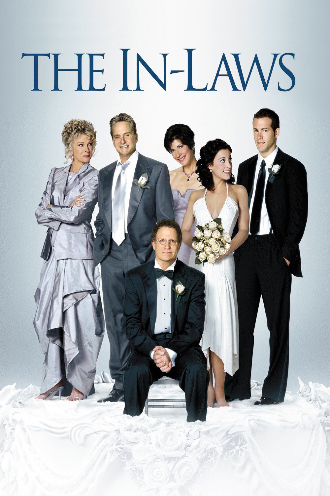

My favourite films
A little bit about the "best films of all time"
An honest list of some of my favourite films, in order. This list is compiled based on how much I personally enjoy the films.
It is not a 'best films of all time' list, though many of them I would consider to be worthy contenders.
When compiling a 'favourite' films list, I tend to find people are often too conscious that the list is to be presented or shown to
others, which distorts the truth and results in a compilation designed to impress or disguise actual preference.
This list does no such thing, and contains guilty pleasures, childhood favourites, overlooked obscurities, world cinema greats,
classics and a number of films that shout "quite frankly, dear, I don't give a damn!". After about 6 years of this list's
existence, I have abandoned my rule of having to have seen the film at least twice, and have added an additional 150 titles to form
a more comprehensive, varied collection of the films I adore.
Below films only part from my 'best films of all time' list and I would like to share them with you:
- The Lord of the Rings: The Fellowship of the Ring (2001)
- Lord of the Rings: The Return of the King (2003)
- The Lord of the Rings: The Two Towers (2002)
- Harry Potter and the Philosopher's Stone (2001)
- Harry Potter and the Chamber of Secrets (2002)
- Harry Potter and the Prisoner of Azkaban (2004)
- The Last Samurai
- The Lion, the Witch and the Wardrobe
- Prince Caspian
Fist that comes to my mind this are the movie which I saw a long time ago, such as:
-
Mr. and Ms. Smith
Link for Wikipedia
The husband and wife struggle to keep their marriage alive until
they realise they are both secretly working as assassins.
Now, their respective assignments require them to kill each other.
-
The In-Laws
Link for Wikipedia

The daughter of a mild-mannered foot doctor is about to get married.
Just prior to her wedding, the doctor discovers that her would-be in-laws
are international smugglers.
-
Pirates of the Caribbean
Link for Wikipedia

Pirates of the Caribbean is a series of fantasy swashbuckler films produced by
Jerry Bruckheimer and based on Walt Disney's theme park attraction of the same name.
The film series serves as a major component of the eponymous media franchise.